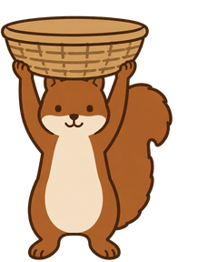
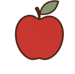
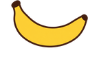
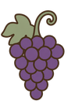
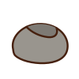
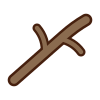

그림을 불러오는 중…
레시피에 적힌 순서대로 과일을 받으세요.


순서대로 받기아래 레시피의 빨간 칸이 지금 받을 과일입니다. 왼쪽부터 차례로 채웁니다.
순서가 아니면 깎여요레시피에 있는 과일이라도 차례가 아니면 받으면 안 됩니다.

돌멩이와 나뭇가지는 피하기먹을 수 없는 것들입니다. 받으면 도토리가 깎입니다.미정으로 남아 있던 두 가지를 여기서 직접 만져보고 정하면 됩니다 —
수치는 game/config/에서 그대로 읽어옵니다. 제한시간은 고정값이
아니라 «최소 소요 + 여유»로 역산되므로, 스폰이나 속도를 바꾸면 같이 움직입니다.
난이도는 낙하 속도가 담당합니다 — 화면에 몇 개가 더 뜨는지는 레인이 5개라
체감이 잘 안 바뀝니다. 계기판의 회피여유(낙하시간 − 끝에서 끝 이동시간)가
레벨업 체감을 만드는 값이고, Lv1 2.02초에서 Lv7 0.47초까지 줄어듭니다.
아직 미정인 건 실패 시 진행도 리셋 하나입니다.